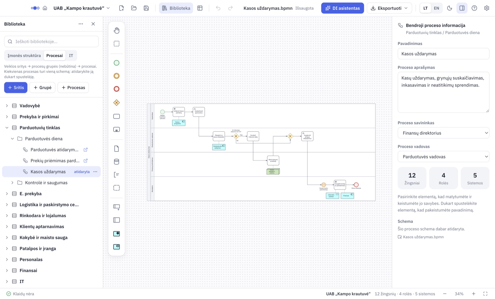

Nuo tuščios bibliotekos iki naudotojų ekranų
Ta tvarka, kuria dirba dauguma: pirmiausia įmonės struktūra, tada procesai ir schemos, pabaigoje dalijimasis. BPMN čia nemokome – tik kur kas yra Promodo.
Įdiegimas ir pradžia
Atsisiųskite ir įdiekite Promodo. Programa atsidaro Pradžios ekrane – tą patį mato ir naudotojai. Jūsų darbo vieta – Architekto darbo laukas. Pirmą kartą jį atidarius trumpas turas parodys pagrindinius mygtukus.
Kalbą keičia LT / EN viršuje. Viskas išsaugoma automatiškai.
Įmonės biblioteka
Viena biblioteka – viena įmonė. Biblioteka yra aplankas su visais įmonės procesais, struktūra ir schemomis. Pagal nutylėjimą tai Dokumentai/Promodo.
- Architekto darbo lauke viršuje kairėje spustelėkite įmonės pavadinimą.
- Pasirinkite Nauja biblioteka…, įrašykite įmonės pavadinimą.
- Pradėkite nuo tuščios bibliotekos arba esamos kopijos (kaip šablono).
- Spustelėkite Pasirinkti vietą ir sukurti.
Jei naudotojai biblioteką atsidarys iš bendro aplanko, kurkite biblioteką iškart jame (OneDrive, Google Drive ar tinklo diske).
Tarp įmonių persijungiate tame pačiame meniu: Bibliotekos šiame kompiuteryje.
Įmonės struktūra
Pradėkite nuo jos, nes schemų juostos jungiamos su atsakomybėmis.
- Kairėje atidarykite Biblioteka ir skirtuką Įmonės struktūra.
- Spustelėkite + Sritis ir sukurkite veiklos sritis (pvz., Pardavimai, Finansai).
- Kiekvienoje srityje pridėkite atsakomybes (pareigas), pvz., Kasininkas.
Tvarką keičiate tempdami arba per Perkelti į….
Procesai
- Skirtuke Procesai naudokite tas pačias veiklos sritis. Prireikus pridėkite + Grupė.
- Spustelėkite + Procesas. Dešinėje, skiltyje Bendroji proceso informacija, įrašykite aprašymą ir pasirinkite Proceso savininką bei Proceso vadovą.
- Dukart spustelėkite procesą – atsidarys jo schema. Jei jos dar nėra, Promodo sukurs tuščią.
Kiekvienas procesas turi vieną schemą. Failai laikomi bibliotekos aplanke, išsaugoti nereikia.
Pirmoji schema
- Telkinys (pool) – tai procesas, juostos – atsakomybės. Pridėjus juostą Promodo paklaus, kuriai atsakomybei ji skirta.
- Elementai – kairėje paletėje. Spustelėjus žingsnį šalia atsiranda kitas galimas elementas, dokumentas, duomenų bazė ar IT sistema.
- Apačioje Patikra rodo BPMN klaidas ir pasiūlo pataisymą. Braižyti ji netrukdo.
- Rodyklės susipainiojo? Dešiniuoju pelės mygtuku spustelėkite tuščią vietą ir pasirinkite Sutvarkyti rodykles.

Žingsnio laukai
Pažymėkite žingsnį – dešinėje atsiras jo laukai: atsakingas, sistema, dokumentai, trukmė ir Rezultatas. Iš jų sudaromi Proceso aprašas (Excel) ir Word dokumentacija, todėl verta užpildyti.
IT sistemos
- Skirtuke IT sukurkite sistemas ir jų modulius.
- Schemoje spustelėkite žingsnį ir pridėkite IT sistemą – ji prisijungs punktyrine linija. Susiekite ją su bibliotekos sistema.
IT sistemos žymimos ArchiMate ženklais. Kur kuri naudojama, rodo Apžvalga.
Schemos iš kitų programų
Kitos BPMN programos schemą atidarykite per Atidaryti…: tinka ir .bpmn, ir .bpm failai. Perkeliamas išdėstymas, juostos, elementų tipai, sąlygos ir duomenys.
Atidaryta schema su biblioteka automatiškai nesusiejama: telkinį ir juostas susiekite patys (Patikra parodo, ką, ir siūlo Susieti…). Papildomų atributų reikšmės kol kas neperkeliamos.
Architekto slaptažodis
Be jo bet kuris naudotojas, atsidaręs bendrą aplanką, galėtų atidaryti ir Architekto darbo lauką.
- Spustelėkite įmonės pavadinimą ir Nustatyti architekto slaptažodį…
- Išsaugokite atkūrimo kodą – jo prireiks pamiršus slaptažodį.
Kiti gali tik žiūrėti. Savo kompiuteryje galite pažymėti Prisiminti šiame kompiuteryje. Išeidami – Užrakinti architektą.
Dalijimasis su naudotojais
Paprasčiausia: biblioteka laikoma bendrame aplanke, naudotojai jį atidaro savo Promodo ir visada mato naujausią versiją. Jiems nusiųskite aplanko nuorodą ir šį vadovą.
Kai bendro aplanko nėra: įmonės pavadinimo meniu pasirinkite Paskelbti…
- Išsaugoti paketo failą (.promodo) – vienas failas, kurį galima nusiųsti laišku. Galima apsaugoti slaptažodžiu.
- Atnaujinti bendrą aplanką – tik peržiūrai skirta kopija kitame aplanke.
- Įrašykite, kas naujo. Kiekvienas paskelbimas gauna versijos numerį ir datą.
Naudotojai be Promodo? Žinynas išsaugo visą biblioteką kaip tinklalapį su paieška arba PDF.
Vienu metu redaguoti turėtų vienas žmogus: du architektai tame pačiame aplanke perrašytų vienas kito pakeitimus.
Eksportas
Mygtukas Eksportuoti viršuje:
- Paveikslėliai klientams: PNG (ryškus, 2×), PNG be fono, SVG, vektorinis PDF.
- Dokumentai: Word dokumentacija, Proceso aprašas (Excel).
- BPMN 2.0 failas kitiems įrankiams.
Kiekviename faile – įmonė, versija ir data. Tai išjungiama tame pačiame meniu.
Apžvalga ir spragos
Apžvalga (viršuje arba ⌘⇧O / Ctrl+Shift+O) perskaito visas schemas: žingsniai, procesai, atsakomybės, IT sistemos ir lentelė Procesas × atsakomybė. Skirtukas Spragos rodo nesusietas juostas, procesus be schemos ir nenaudojamus elementus. Viską galima Eksportuoti į Excel.
DI asistentas (nebūtina)
Aprašykite procesą žodžiais arba įkelkite lentos nuotrauką – asistentas nubraižys juodraštį, kurį peržiūrite ir taisote. Taip pat atsako, kaip ką padaryti Promodo.
Reikia interneto ir jūsų paties Anthropic rakto: Nustatymai → DI asistentas. Be jo visa kita veikia.